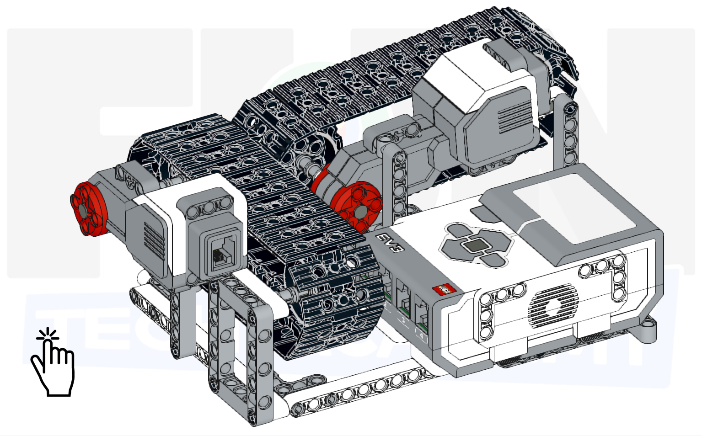
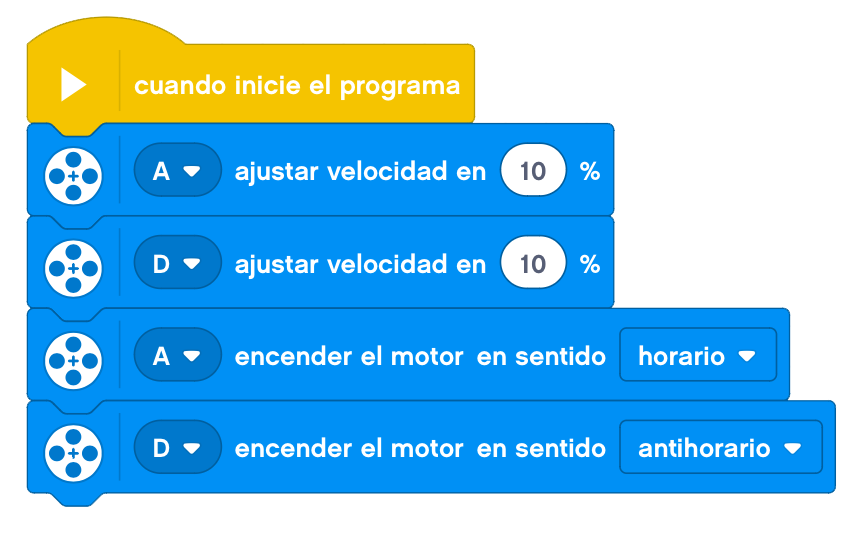

Vamos a seguir con las bandas de rodamiento y construiremos una cinta transportadora doble.
Sobre una estructura que una los dos motores, crearemos una cinta transportadora doble que sea capaz de
llevar un objeto hasta el final de una de ellas para que lo recoja la segunda cinta y lo transporte hasta
un recipiente.
A continuación, mostraremos un ejemplo de construcción de una cinta transportadora doble base.
Empezaremos por montar la base.




Le añadimos a la base el bloque EV3.


Montamos una de las cintas transportadoras.


Le añadimos la primera cinta a la base construida.


Construimos la segunda cinta transportadora.


También la añadimos a la estructura con la primera cinta.


Le añadimos el cableado y pondremos al final de la segunda cinta un recipiente para recoger el objeto transportado. Nos debería de quedar un montaje de este estilo.

Programaremos nuestra cinta para que los motores funcionen en el sentido correcto y a una velocidad baja.

Nuestro proyecto terminado funcionaría de la siguiente forma.